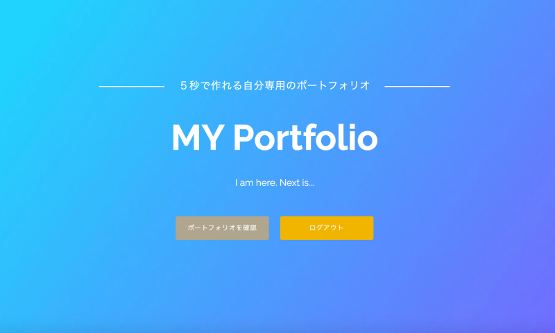
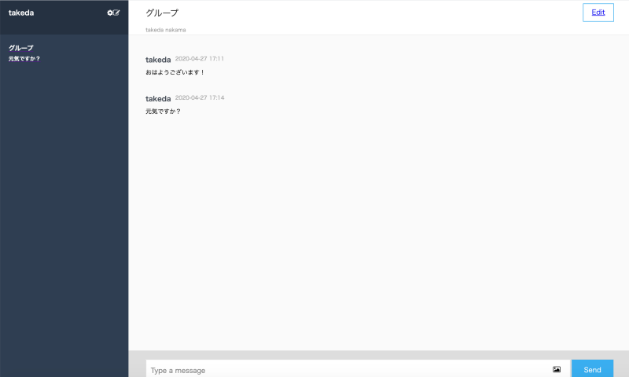

WORKS
- ポートフォリオ（本サイト）
- 【制作】2020年4月
- 【概要】転職活動を目的とした自身のポートフォリオサイト
- 【開発目的】ポートフォリオサイトの制作、WordPressを用いたWebサイト開発経験
- 【開発環境】言語：HTML,CSS,PHP,JavaScript、ツール：WordPress、OS：Mac、DB：MySQL、サーバー：Xserver
- 【学び】WordPressのオリジナルテーマの制作・導入方法
- Link
- GitHub
- MyPortfolio
- 【制作】2020年3月
- 
- 【概要】自分専用のポートフォリオサイトを誰でもすぐに作れるアプリ
- 【開発目的】PHPおよびLaravelを用いた開発経験、herokuの利用
- 【開発環境】言語：HTML,CSS,PHP、ツール：Laravel、OS：Mac、DB：MySQL、サーバー：heroku
- 【学び】Laravel制作における基礎、問い合わせフォーム
- Link
- GitHub
- フリマアプリのサイト
- 【制作】2019年12月〜2020年2月
- 【概要】TECH:CAMP卒業課題 某フリマアプリの機能を調査、クローンサイトを制作
- 【開発目的】アジャイル方式・チーム開発の経験、学習内容の定着
- 【担当】スクラムマスター、デプロイ、ユーザー新規登録・ログイン機能、商品購入機能
- 【開発環境】言語：Haml,Scss,Ruby,JavaScript、ツール：Ruby on Rails、OS：Mac、DB：MySQL、サーバー：AWS
- 【学び】デプロイ、sessionを用いたデータの扱い、SMS認証、クレジットカード支払い機能
- Link
- GitHub
- ChatSpace
- 【制作】2019年11月
- 
- 【概要】TECH ;CAMP課題 チャットアプリケーション
- 【開発目的】マークアップからバックエンドまで総合的なスキルの習得
- 【開発環境】言語：Haml,Scss,PHP,JavaScript、ツール：Ruby on Rails、OS：Mac、DB：MySQL、サーバー：AWS
- 【学び】非同期通信、インクリメンタルサーチ、GitHubによるバージョン管理
- Link
- GitHub